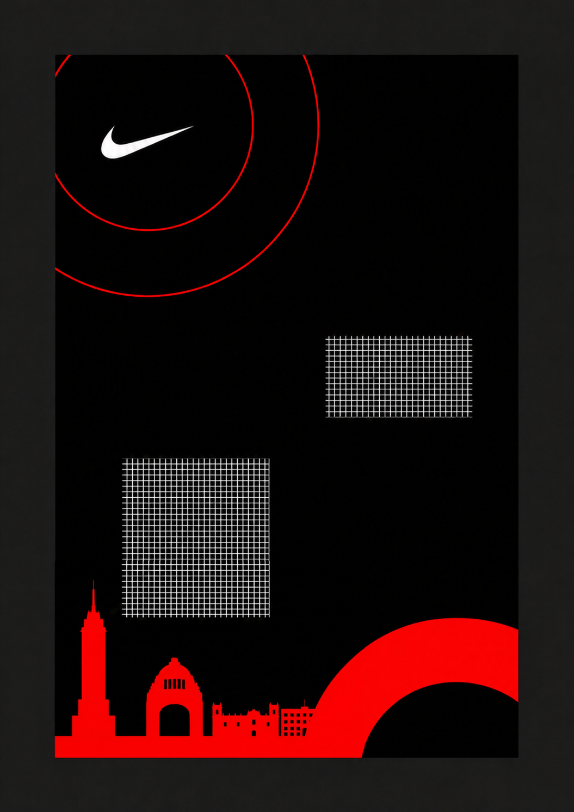
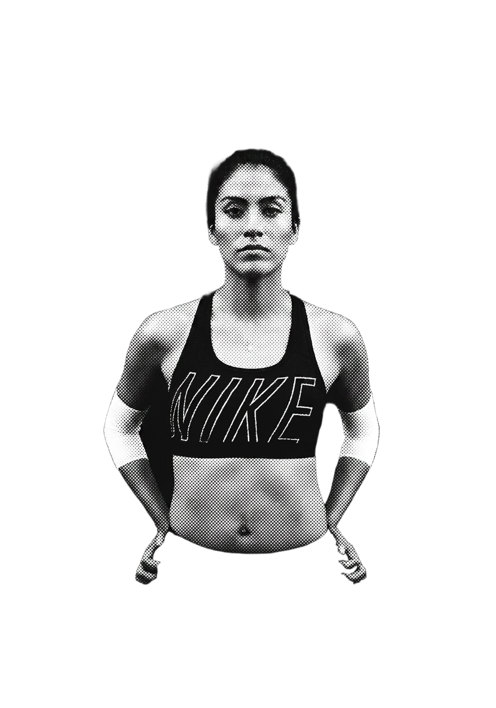
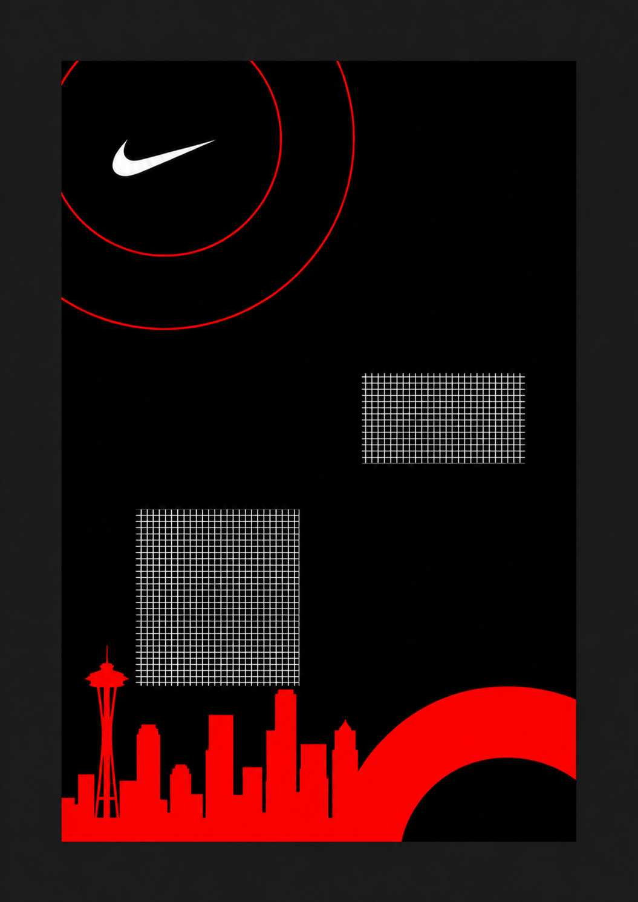
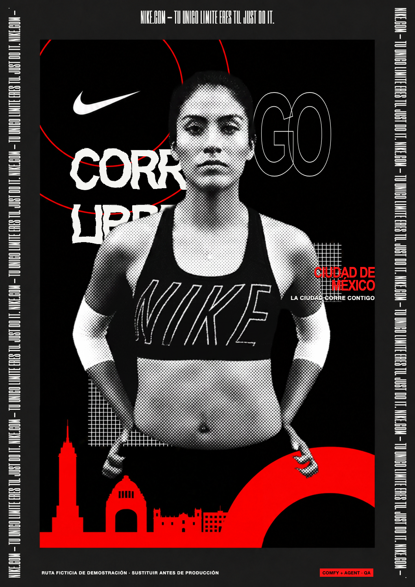

LOCALIZE
PLACE + PERSON


The strategist writes landmark and casting briefs. Nano Banana Pro changes the skyline and fictional runner; Recraft returns the editable alpha.
COMFY + CODEX + KLING + HYPERFRAMES
Give the system a list of cities. It localizes the place, casts a new fictional runner, rebuilds the campaign typography, creates motion, and returns governed static and video assets for every market.
Independent interview prototype. Not a Nike or Adobe-authorized campaign.


ONE COMPLETE WALKTHROUGH / MEXICO CITY
A single locale record drives the complete A→D chain. Each stage has one clear job and one reviewable output.


The strategist writes landmark and casting briefs. Nano Banana Pro changes the skyline and fictional runner; Recraft returns the editable alpha.
Codex uses the graphic-design skill to rebuild the exact campaign layout, localized headline, city lockup, perimeter type, and production metadata.
Kling receives the isolated person—not the finished poster—then creates a subtle warm-up while the approved city plate remains locked.
HyperFrames takes the approved static as the source of truth, then adds staggered copy, the wavy headline, city lockup, and perimeter marquee.
ONE BATCH / SIX FINISHED ASSETS
The same workflow ran for Mexico City, Sydney, and Shanghai. These are the finished campaign deliverables—not intermediate generations.
ENTERPRISE GOVERNANCE
The system can automatically validate every file, route exceptions to a human reviewer, and publish only approved assets into the enterprise DAM.
ADOBE EXPERIENCE MANAGER ASSETS
The production connector would use the customer’s AEM as a Cloud Service credentials and product profile. Approved binaries upload directly to AEM’s cloud storage; QA results and locale provenance travel with the asset metadata.